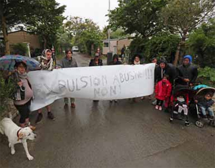

Charente-Maritime
300 locataires sommés de partir
Des locataires du camping de la Corniche à Angoulins-sur-meront déployé une banderole hier. PHOTO JEAN-CHRISTOPHE SOUNALET
Angoulins/L'Houmeau - Deux campings fermeront ce soir pour des raisons de " sécurité ", laissant les locataires sans solution en plein confinement
Sophie Carceles a quitté Bordeaux l'an dernier pour venir près de La Rochelle. Inscrite à Pôle emploi en attendant de créer son auto-entreprise, elle vit depuis septembre dernier dans un mobil-home du camping de la Corniche, à Angoulins-sur-Mer. Un logement provisoire qu'elle partage avec sa fille de 19 ans, sa petite-fille de 18 mois et un mineur isolé d'origine camerounaise de 17 ans dont elle a la tutelle.
Début avril, comme tous les locataires du camping, elle a reçu un mail de la direction lui demandant de libérer son mobil-home le 31 mai. Une " mauvaise surprise ". " On pensait pouvoir rester jusqu'à fin juin. C'est ce que m'a dit le directeur quand j'ai payé mon loyer début avril ", témoigne Sophie Carceles. Ce dernier a finalement accepté de garder les locataires jusqu'en juin, avant de revenir sur sa décision.
Mardi, tous ont reçu en mains propres un courrier de la direction les informant de la fermeture du camping le 30 avril. Celle-ci évoque " une situation devenue incontrôlable " depuis " plusieurs jours ".
"Garants de la sécurité"
Les gendarmes sont intervenus une cinquantaine de fois à Angoulins, pour des états d'ébriété, du tapage nocturne, des rodéos à scooter, des agressions physiques entre occupants, de la vente illégale d'alcool...